Chapter 3 What Is an Integral?
A stream gauge logs flow every 15 minutes during a storm. Each reading tells you how fast water is moving past, in cubic meters per second. The people downstream don’t care much about any single reading. They want to know how much water went by. To get that, you add up all the changing flow rates across the storm. That’s an integral.
This chapter builds the integral one piece at a time. We start with rates you can picture, turn them into areas under a curve, then write the whole process as a Riemann sum.
3.1 Chapter Objectives
By the end of this chapter, you will be able to:
- Explain how an integral turns a rate into a total, using examples like streamflow, photosynthesis and pollutant load
- Interpret the area under a rate curve as total change, including gains, losses and net change
- Construct and evaluate left, right and midpoint Riemann sums from a graph, a formula or a table of data
- Apply the trapezoidal rule, and explain why it often beats rectangles
- Choose an approximation method, and say whether it will overestimate or underestimate
3.2 Accumulation in Environmental Systems
Most of what you measure in the field is a rate: how fast something is happening. An integral turns a rate into a total.
Some examples:
- Streamflow → total river discharge over a day
- Photosynthesis rate → total daily carbon uptake
- Pollutant concentration × flow → total pollutant load entering a lake
- Evapotranspiration → total water loss during a heatwave
- Recruitment rate → total new individuals added to a population
If you know the rate something changes, the integral gives you the total change over an interval.
Walking on a Treadmill
Start with something you can feel. You’re on a treadmill at a steady 5 miles per hour. That speed is a rate: it tells you how fast distance is being added.
Walk at 5 mph for 1 hour and your total distance is:
\[ \text{distance} = \text{rate} \times \text{time} = 5 \times 1 = 5 \text{ miles}. \]
Now say the speed changes: 4 mph for the warm-up, 5 mph in the middle, 6 mph at the end. You can still get the total distance. Each minute at 4 mph adds a bit of distance, each minute at 5 mph adds a bit more, and each minute at 6 mph adds more again. Add up all the minutes and you have the total distance walked.
That’s what an integral does. It adds up a changing rate over time.
Concept Check: What an Integral Represents
In your own words, what does an integral represent in environmental science?
Click to reveal answer
An integral gives the total accumulation of a quantity over time or space when you know its rate of change. It adds up many small contributions to get a total: total volume of water, total carbon fixed, total mass exported.
Concept Check: Why Rates Are Easier Than Totals
Why are rates often easier to measure directly than total accumulated quantities?
Click to reveal answer
A rate can be measured in a moment or over a short interval. A stream gauge logs discharge every few minutes, and a flux tower logs CO₂ uptake many times a second. A total means tracking accumulation over the whole period, and that’s the job the integral does for you.
3.3 From Rate Curves to Areas Under Curves
When you graph a rate \(f(t)\), the height of the curve is how fast the system is changing at each moment.
The total accumulation from time \(a\) to \(b\) is the area under the rate curve:
- Height (rate) × width (time) = accumulated amount
- Units multiply:
- \(\text{m}^3/\text{s} \times \text{s} = \text{m}^3\)
- \(\mu\text{mol}/(\text{m}^2\cdot\text{s}) \times \text{s} = \mu\text{mol}/\text{m}^2\)
- \(\text{m}^3/\text{s} \times \text{s} = \text{m}^3\)
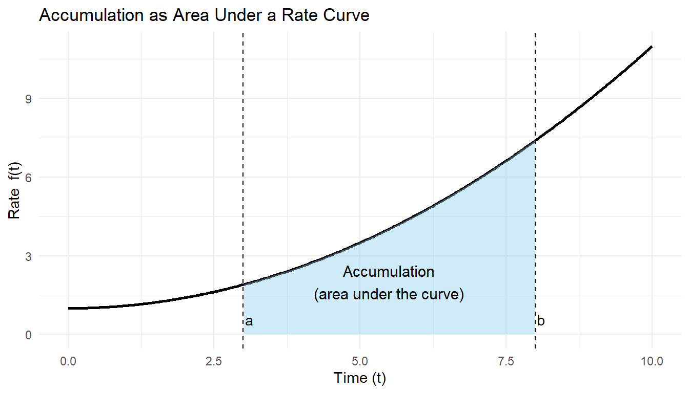
Environmental examples:
- Total river discharge from a storm hydrograph
- Total CO₂ absorbed during a sunny day
- Total nitrogen mineralized over a growing season
Filling a Water Bottle
You’re filling a water bottle from a tap, and the flow rate changes:
- You start gently: 50 mL/s for 10 seconds.
- You open the tap further: 90 mL/s for 15 seconds.
- You ease it back near the top: 30 mL/s for 10 seconds.
To find how much water ends up in the bottle, you can’t multiply one rate by one time. You add up each stretch: rate × time for the slow start, the fast middle and the slow finish. On the graph, each stretch is a rectangle under the rate curve. Add the rectangles and you have the total volume in the bottle.
That’s what an integral measures: the total you get by adding up small contributions from a changing rate.
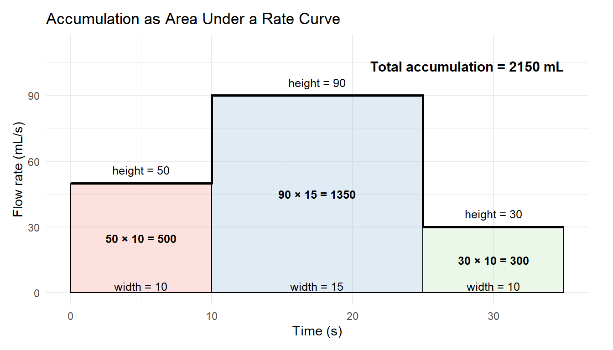
Concept Check: Area Under a Rate Curve
What does the area under a rate curve represent?
Click to reveal answer
The area under a rate curve represents the total accumulated change of the quantity over the interval shown. If the rate is in m³/s and the horizontal axis is in seconds, the area is in m³: a volume.
Concept Check: Why the Units Work Out
Why do the units of an integral make sense physically?
Click to reveal answer
The integral multiplies a rate by a width (time or distance), so the units simplify to a total. For example, m³/hr × hr = m³, and mg C/m²/day × day = mg C/m². The “per time” or “per distance” in the rate cancels with the variable you’re integrating over.
Concept Check: Why a Single Rate Times Time Falls Short
Why is multiplying a single rate by total time often a poor approximation in environmental systems?
Click to reveal answer
Because environmental rates usually change over time. Streamflow rises and falls during a storm, photosynthesis follows the light, and soil respiration follows temperature. One reading doesn’t represent the whole interval, so multiplying it by the full duration throws away all that variation.
3.4 Riemann Sums: Adding Up Small Pieces
Real rates are not constant, so one rate times one time won’t do. Instead, break the interval into small pieces and add up what each piece contributes:
- Divide the interval into smaller subintervals of equal width.
- Approximate the rate as constant over each subinterval.
- Compute each slice’s contribution using
\[ \text{(height)} \times \text{(width)}. \] - Add all slices together to estimate the total accumulation.
Each slice is the amount accumulated over a short stretch of time. Add them all and you have an estimate of the total.
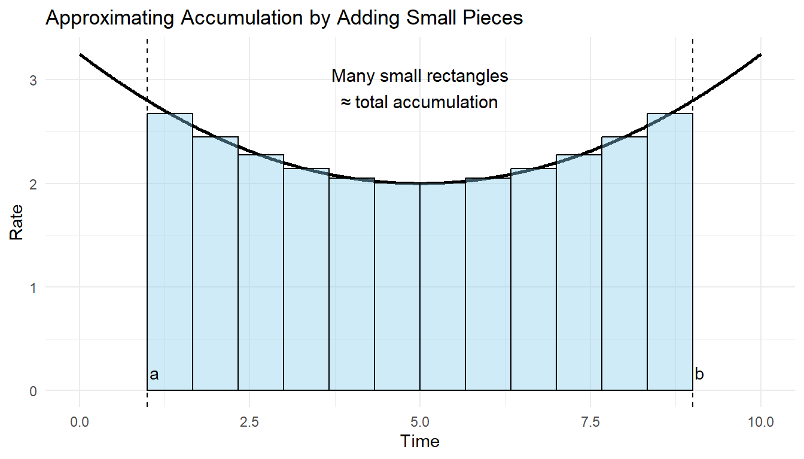
3.4.1 Choosing a Riemann Sum Method
Left, right and midpoint sums differ in one thing: where in each slice you read the rate. That choice is an assumption about how the system behaves inside each slice.
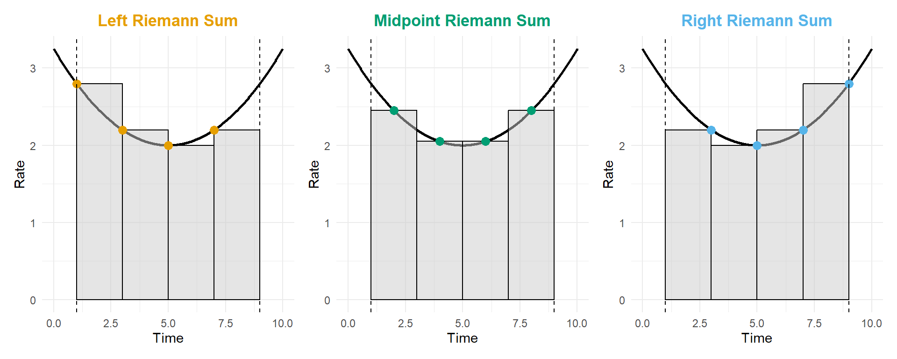
- Left Riemann sum. Uses the rate at the left endpoint of each slice. It assumes the rate holds at its starting value for the whole slice. It’s the natural choice when your logger records at the start of each interval.
- Rate increasing: underestimates.
- Rate decreasing: overestimates.
- Right Riemann sum. Uses the rate at the right endpoint. It assumes the rate has already reached its end value across the whole slice. It’s the natural choice when data are recorded at the end of each interval.
- Rate increasing: overestimates.
- Rate decreasing: underestimates.
- Midpoint Riemann sum. Uses the rate at the middle of each slice. For a smooth rate, the middle value is usually close to the slice’s average, so the errors on either side of it partly cancel. With the same number of slices, it’s usually much closer than left or right.
Rule of thumb: use the midpoint for smooth processes when you can. Use left or right when that’s how your data were recorded, or when you want an estimate you know is high or low. If accuracy matters, use more slices.
Concept Check: What a Single Rectangle Represents
What does each rectangle in a Riemann sum represent?
Click to reveal answer
Each rectangle is a small contribution to the total. Its width is a short slice of time (or distance), and its height is the rate during that slice. Multiply them and you get roughly how much accumulated in that slice.
Concept Check: Why More Rectangles Helps
Why do Riemann sums become more accurate as the number of rectangles increases?
Click to reveal answer
Narrower slices leave less room for the rate to change inside each rectangle. Assuming the rate is constant is more reasonable over a short slice, so the estimate closes in on the true total.
Concept Check: The Assumption Inside Each Rectangle
What assumption is made when using rectangular approximations?
Click to reveal answer
That the rate stays roughly constant within each subinterval. Left endpoint, right endpoint or midpoint, you’re using one value to stand in for the rate across the whole slice.
3.5 Approximation and Error in Riemann Sums
A Riemann sum is an approximation. Swapping a changing rate for flat rectangles introduces error, because the rectangles don’t match the shape of the curve. Some stick up above it, others fall short. The gap between the rectangles’ total area and the true area under the curve is the approximation error.
3.5.1 Why Error Occurs
Inside each slice, we treat the rate as constant, but the real rate is rising, falling or curving. The more it changes within a slice, the bigger the error. That’s why narrower slices, and more of them, give a better estimate. Shrink the slice width toward zero and the Riemann sum approaches the definite integral: the exact total.
3.5.2 Overestimates and Underestimates
Whether a Riemann sum overestimates or underestimates depends on two things: the shape of the rate curve, and where you read the rate in each slice.
Concept Check: Why Left Sums Underestimate Increasing Rates
Why does a left Riemann sum tend to underestimate accumulation for an increasing function?
Click to reveal answer
It uses the rate at the start of each interval, which is lower than the rate everywhere else in that interval. Every rectangle is too short, and the shortfalls add up across all the subintervals.
Concept Check: Why Right Sums Overestimate Increasing Rates
Why does a right Riemann sum tend to overestimate accumulation for an increasing function?
Click to reveal answer
It uses the rate at the end of each interval, which is higher than the rate everywhere else in that interval. Every rectangle is too tall, and the excess adds up across all the subintervals.
Concept Check: Why the Midpoint Tends to Win
Why is the midpoint Riemann sum often more accurate than left or right sums?
Click to reveal answer
The midpoint value is usually close to the average rate over the subinterval. For a smooth function, the part of the rectangle that overshoots the curve on one side mostly cancels the part that falls short on the other.
3.5.3 Interpreting Error in Environmental Contexts
In practice, the error has consequences. Underestimate a pollutant load and cleanup gets delayed. Overestimate the water available and you end up with a management plan that can’t be met.
Often the goal isn’t the exact number. It’s a number you can defend. So the question to ask is:
Which is worse here: guessing too high, or too low?
A conservative estimate errs on the safe side. Which side is safe depends on the problem:
- Too low is safer for water supply (don’t promise water you can’t deliver), carbon offsets (don’t overstate the benefit) and population recovery (don’t declare success early).
- Too high is safer for pollutant loads (size the treatment big enough), flood volumes (design the culvert for more) and demand forecasts (don’t run short).
If the rate is only rising or only falling over the interval, left and right sums give you a guaranteed low estimate and a guaranteed high one. You can pick the one that’s safe on purpose. The midpoint aims for accuracy instead. Either way, picking a method is a modeling decision.
Concept Check: What Makes an Estimate Conservative
What makes an estimate “conservative” in environmental modeling?
Click to reveal answer
A conservative estimate errs on the side that does less harm if it turns out to be wrong. For a pollutant load, that might mean deliberately overestimating so treatment is big enough. For a sustainable harvest, it might mean underestimating so you don’t take more than the system can support. Which way is “conservative” depends on which mistake would hurt more.
Concept Check: Choosing a Method Is a Modeling Decision
Why is choosing a Riemann sum method considered a modeling decision rather than a purely mathematical one?
Click to reveal answer
Because the choice rests on assumptions about timing, uncertainty and acceptable risk, and those depend on what happens if you’re wrong. Someone calculating a pollutant load for a permit may deliberately pick the method that overestimates. A fisheries manager setting a catch limit may deliberately pick the one that underestimates. Same math, different judgment.
3.6 Riemann Sums as a Calculus Expression
So far we’ve described Riemann sums with words, pictures and rectangles. That’s enough to see what’s going on. To work with any function on any interval, we need a compact way to write “add up many small pieces.”
That’s summation notation.
\[ \sum_{i=1}^{n} \]
It lets you write the whole process in one expression: break the interval into pieces, estimate each piece’s contribution, and add them up.
3.6.1 Rectangle Contributions in Notation
To build a Riemann sum, we first divide the interval \([a,b]\) into \(n\) subintervals of equal width \(\Delta x\).
In each subinterval, we choose a sample point \(x_i^*\).
The rectangle over that subinterval has:
- height: \(f(x_i^*)\)
- width: \(\Delta x\)
Each rectangle therefore contributes approximately \[ f(x_i^*)\,\Delta x \] to the total accumulation.
3.6.1.1 Width of the Rectangle
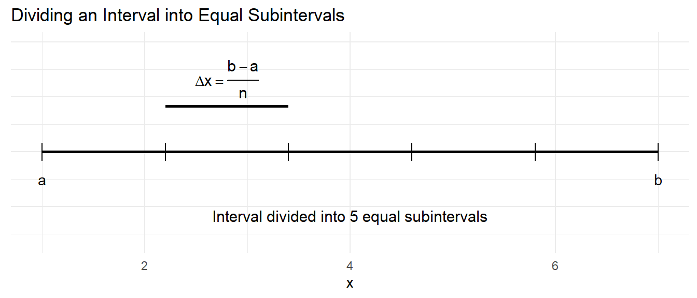
The interval from \(a\) to \(b\) has length \(b - a\). Split it into \(n\) equal pieces and each piece has width \[ \Delta x = \frac{b - a}{n}. \]
\(\Delta x\) is the width of each rectangle. As \(n\) goes up, \(\Delta x\) gets smaller and the estimate gets better.
3.6.1.2 Determining the Height of Each Rectangle
The height of each rectangle is the rate at a chosen sample point in its subinterval. For the \(i\)-th subinterval, pick a point \(x_i^*\). The rectangle’s height is \[ f(x_i^*). \]
Where you put \(x_i^*\) is what makes it a left, right or midpoint sum: at the left end, the right end or the center of the subinterval.
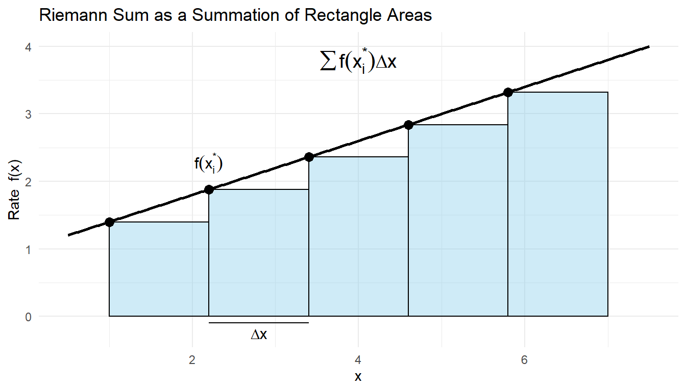
3.6.1.3 Combining Width and Height
Height \(f(x_i^*)\) is the rate. Width \(\Delta x\) is the length of the slice. Multiply them: \[ \text{area of one rectangle} \;\approx\; f(x_i^*)\,\Delta x. \]
That’s just \[ \text{amount} = \text{rate} \times \text{time}, \] done once per slice instead of once for the whole interval. Do it for every slice, add them up, and you have your estimate.
3.6.2 The Riemann Sum - Adding the Rectangles
Put the pieces together and a Riemann sum is written as \[ \sum_{i=1}^{n} f(x_i^*)\,\Delta x. \]
Reading it piece by piece:
- \(i = 1\) to \(n\): add over all the subintervals
- \(f(x_i^*)\): the height of the \(i\)-th rectangle
- \(\Delta x\): the width, the same for every rectangle
Each term is the accumulation over one slice. The whole sum estimates the total accumulation of \(f(x)\) over \([a,b]\). The more slices you use, the better the estimate.
3.6.3 Left, Right, and Midpoint Riemann Sums in Notation
The choice of sample point \(x_i^*\) determines the type of Riemann sum:
Left Riemann sum:
\[ x_i^* = a + (i - 1)\Delta x \]Right Riemann sum:
\[ x_i^* = a + i\Delta x \]Midpoint Riemann sum:
\[ x_i^* = a + \left(i - \tfrac{1}{2}\right)\Delta x \]
These are the same left, right and midpoint rectangles from the pictures earlier, just written down.
3.6.4 Example 1: Approximating Accumulation with a Left Riemann Sum
The next few examples all use the same scenario, so you can compare methods side by side.
Scenario: A downspout filling a rain barrel as a storm builds
A flow sensor on a roof downspout logs the rate \(Q(t)\) at which water runs into a rain barrel: \[ Q(t) = t^2 \quad \text{liters per minute}, \] where \(t\) is minutes since the sensor started recording. The rain is getting heavier, so the flow keeps rising. How much water went into the barrel between \(t = 1\) and \(t = 7\) minutes?
The total volume is the area under the \(Q(t)\) curve on \([1, 7]\). We’ll estimate it with a left-hand Riemann sum using \(n = 3\) subintervals.
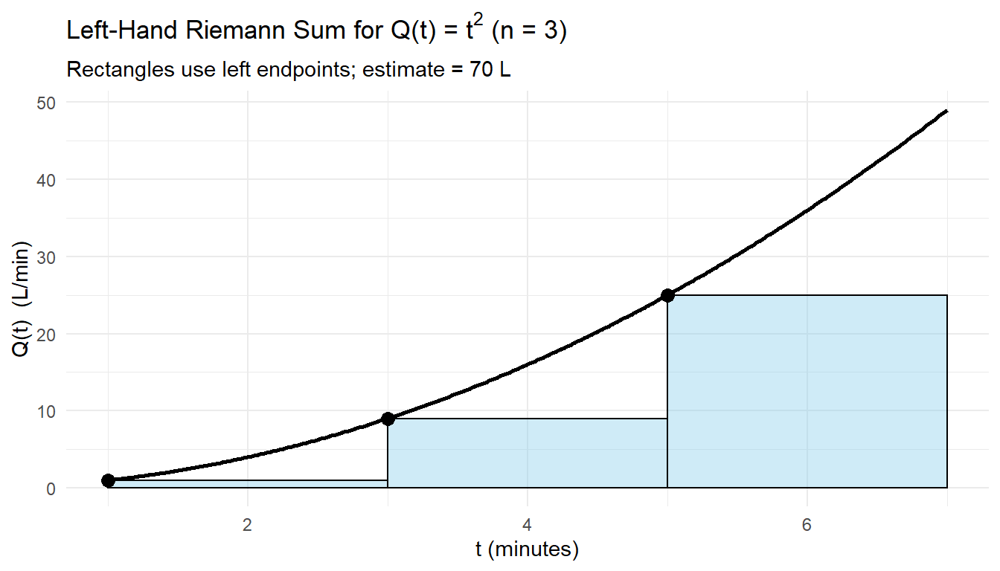
3.6.4.1 Step 1: Compute the Width \(\Delta t\)
The width of each subinterval is \[ \Delta t = \frac{b-a}{n} = \frac{7 - 1}{3} = 2 \text{ minutes}. \]
3.6.4.2 Step 2: Identify the Left Endpoints
For a left Riemann sum, the sample points are \[ t_i^* = a + (i - 1)\Delta t. \]
With \(a = 1\) and \(\Delta t = 2\):
\[ \begin{aligned} t_1^* &= 1 + (1 - 1)(2) = 1, \\ t_2^* &= 1 + (2 - 1)(2) = 3, \\ t_3^* &= 1 + (3 - 1)(2) = 5. \end{aligned} \]
These are the left endpoints of the subintervals \[ [1,3],\quad [3,5],\quad [5,7] \text{ minutes}. \]
3.6.4.3 Step 3: Evaluate the Flow Rate at Each Left Endpoint
\[ Q(1) = 1^2 = 1,\quad Q(3) = 3^2 = 9,\quad Q(5) = 5^2 = 25 \quad (\text{all in L/min}). \]
3.6.4.4 Step 4: Factoring Out \(\Delta t\)
Every term in the sum has the same \(\Delta t\), so you can factor it out.
Starting from \[ \sum_{i=1}^{3} Q(t_i^*)\,\Delta t, \] we rewrite this as \[ \Delta t \sum_{i=1}^{3} Q(t_i^*). \]
With \(\Delta t = 2\), this becomes \[ 2 \sum_{i=1}^{3} Q(t_i^*) = 2(1 + 9 + 25). \]
Add up the heights (flow rates in L/min), then multiply by the width (minutes) to turn them into a volume (liters):
\[ 2 \times 35 = 70 \text{ liters}. \]
3.6.4.5 Interpretation
The left-hand sum estimates that 70 liters went into the barrel between minute 1 and minute 7.
Because \(Q(t)\) is increasing on this interval (the rain is getting heavier), each left-endpoint height is the lowest flow in its slice. So this estimate underestimates the true volume.
3.6.5 Example 2: Right-Hand Riemann Sum
Same scenario: \(Q(t) = t^2\) L/min on \([1, 7]\) minutes, with \(n = 3\). This time we use the right endpoints.
3.6.5.1 Step 1: Compute the Width \(\Delta t\)
\[ \Delta t = \frac{7 - 1}{3} = 2 \text{ minutes}. \]
3.6.5.2 Step 2: Identify the Right Endpoints
For a right Riemann sum, the sample points are \[ t_i^* = a + i\,\Delta t. \]
With \(a=1\) and \(\Delta t=2\): \[ \begin{aligned} t_1^* &= 1 + 1(2) = 3,\\ t_2^* &= 1 + 2(2) = 5,\\ t_3^* &= 1 + 3(2) = 7. \end{aligned} \]
3.6.5.3 Step 3: Evaluate the Flow Rate
\[ Q(3)=9,\quad Q(5)=25,\quad Q(7)=49 \quad (\text{L/min}). \]
3.6.6 Example 3: Midpoint Riemann Sum
Now we use the midpoint of each subinterval as the sample point.
3.6.6.2 Step 2: Identify the Midpoints
For a midpoint Riemann sum, the sample points are \[ t_i^* = a + \left(i - \tfrac{1}{2}\right)\Delta t. \]
With \(a=1\) and \(\Delta t=2\): \[ \begin{aligned} t_1^* &= 1 + \tfrac{1}{2}(2) = 2,\\ t_2^* &= 1 + \tfrac{3}{2}(2) = 4,\\ t_3^* &= 1 + \tfrac{5}{2}(2) = 6. \end{aligned} \]
3.6.6.3 Step 3: Evaluate the Flow Rate
\[ Q(2)=4,\quad Q(4)=16,\quad Q(6)=36 \quad (\text{L/min}). \]
3.6.7 Comparison
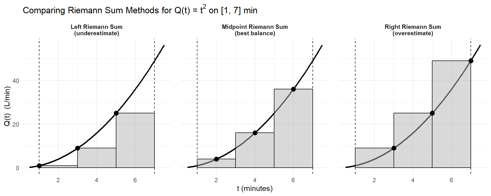
Same curve, same interval, same \(n = 3\). The only difference between the panels is where each rectangle’s height is read.
Because \(Q(t)=t^2\) is increasing on \([1,7]\) (the rain is getting heavier), you can predict which way each method will miss:
Left Riemann sum (left panel):
Heights come from the left endpoint. Flow is rising, so the rectangles sit below the curve: an underestimate.Right Riemann sum (right panel):
Heights come from the right endpoint, so the rectangles stick up above the curve: an overestimate.Midpoint Riemann sum (middle panel):
Heights come from the middle of each slice. Each rectangle is a little high on one side and a little low on the other, and the two mostly cancel: a much closer estimate.
Each method builds in an assumption about what the flow does inside a slice, and that assumption decides which way the estimate misses.
Concept Check: Where Riemann-Sum Error Really Comes From
What is the main source of error in a Riemann sum approximation?
Click to reveal answer
The rectangles don’t match the shape of the curve. Whenever the rate changes within a subinterval, a flat rectangle has to overshoot or fall short, and that mismatch is the error.
3.7 Refining the Approximation
How good a Riemann sum is depends on how finely you slice. Wide slices miss changes in the rate. Narrow slices follow the curve more closely, so the gaps between the rectangle tops and the curve shrink, and so does the error.
Keep going. As the slice width goes to zero and the number of slices grows without limit, the Riemann sum settles on a single value. That value is the definite integral: the exact total. You’ll work with it properly in Chapter 4.
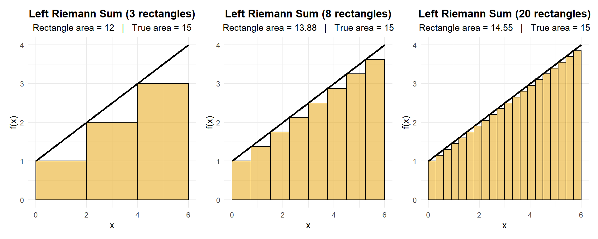
3.7.1 Increasing \(n\)
So far we’ve changed the method and kept \(n\) fixed. Now flip it: keep the method, and increase the number of rectangles.
Back to the rain barrel from Examples 1 to 3: \[ Q(t) = t^2 \quad \text{liters per minute}, \] on \([1, 7]\) minutes. Here are left-hand Riemann sums with more and more subintervals: \[ n = 3,\quad n = 8,\quad n = 20. \]
All three use left endpoints, so any change in the estimate comes from the width \(\Delta t\) alone.
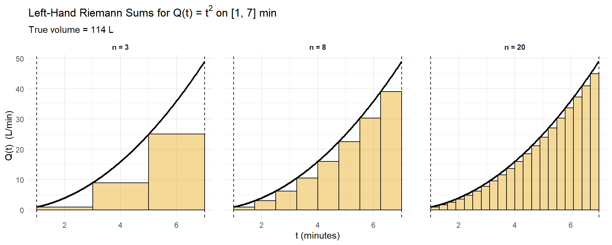
Same function, same interval, same method. Only the number of subintervals changes.
\(Q(t) = t^2\) is increasing, so every one of these left sums is an underestimate. What changes is how big the miss is.
3.7.1.1 Case 1: \(n = 3\)
The width of each subinterval is \[ \Delta t = \frac{7 - 1}{3} = 2 \text{ minutes}. \]
The left endpoints are \[ t_1^* = 1,\quad t_2^* = 3,\quad t_3^* = 5. \]
The left-hand Riemann sum is \[ \sum_{i=1}^{3} Q(t_i^*)\,\Delta t = 2\,[1^2 + 3^2 + 5^2] = 2(1 + 9 + 25) = 70 \text{ L}. \]
Low, because the rectangles are wide and the flow climbs fast across each one.
3.7.1.2 Case 2: \(n = 8\)
The width of each subinterval is \[ \Delta t = \frac{7 - 1}{8} = \frac{6}{8} = 0.75 \text{ minutes}. \]
The left endpoints are \[ t_i^* = 1 + (i-1)(0.75), \quad i = 1,\dots,8. \]
The left-hand Riemann sum is \[ \sum_{i=1}^{8} Q(t_i^*)\,\Delta t = 0.75 \sum_{i=1}^{8} \bigl(1 + (i-1)(0.75)\bigr)^2 \approx 96.56 \text{ L}. \]
Still low, but the narrower rectangles track the rising flow better and the error shrinks a lot.
3.7.1.3 Case 3: \(n = 20\)
The width of each subinterval is \[ \Delta t = \frac{7 - 1}{20} = 0.3 \text{ minutes}. \]
The left endpoints are \[ t_i^* = 1 + (i-1)(0.3), \quad i = 1,\dots,20. \]
The left-hand Riemann sum is \[ \sum_{i=1}^{20} Q(t_i^*)\,\Delta t = 0.3 \sum_{i=1}^{20} \bigl(1 + (i-1)(0.3)\bigr)^2 \approx 106.89 \text{ L}. \]
With 20 narrow rectangles, treating the flow as constant in each slice is a reasonable assumption, and the estimate is close to the true volume.
3.7.1.4 Comparison with the True Volume
The exact volume is the definite integral. You’ll learn how to get this number in Chapter 4. For now, take it as given: \[ \int_1^7 t^2\,dt = \left[\frac{t^3}{3}\right]_1^7 = \frac{343 - 1}{3} = 114 \text{ L}. \]
Comparing all four values:
- Left Riemann sum with \(n=3\): \(70 \text{ L}\)
- Left Riemann sum with \(n=8\): \(\approx 96.56 \text{ L}\)
- Left Riemann sum with \(n=20\): \(\approx 106.89 \text{ L}\)
- Exact volume: \(114 \text{ L}\)
The left sums climb toward the true value from below as \(n\) increases. Take \(n \to \infty\), so \(\Delta t \to 0\), and the Riemann sum becomes the definite integral: the exact volume.
Concept Check: The Cost of Finer Partitions
What tradeoff is involved in increasing the number of rectangles \(n\)?
Click to reveal answer
More rectangles means more accuracy, but also more computation, more data, or more measurement effort. In class that’s free. In real monitoring it costs sensors, batteries, technician time and storage.
3.8 Beyond Rectangles: More Accurate Approximation Methods
Rectangles assume the rate is flat across each slice. When the rate changes smoothly, you can often do better without adding more slices: use a shape that follows the curve. This section covers the trapezoidal rule. You’ll meet Simpson’s rule, which fits curves instead of straight lines, in Chapter 6.
3.9 The Trapezoidal Rule
The trapezoidal rule swaps rectangles for trapezoids. Instead of assuming the rate is constant across each slice, it assumes the rate changes in a straight line from one end of the slice to the other.
3.9.1 Idea
On each subinterval \([x_{i-1}, x_i]\), draw a straight line from \((x_{i-1}, f(x_{i-1}))\) to \((x_i, f(x_i))\). The area under that line is a trapezoid.
In effect, it averages the left and right values, which cancels out much of the built-in bias of left and right sums.
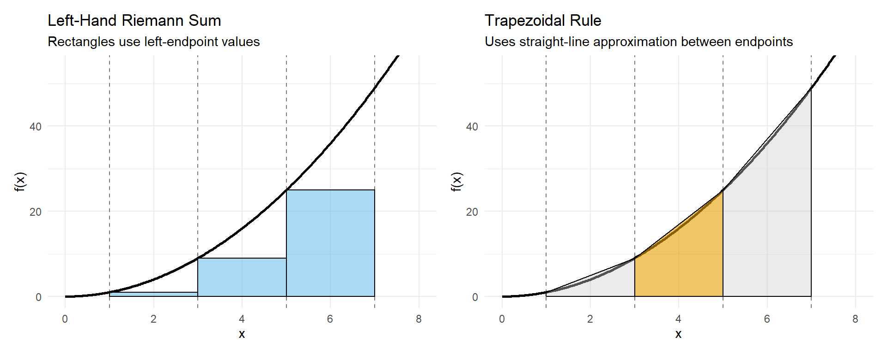
Same function, interval and partition in both panels. The left-sum rectangles sit flat at the left endpoint, so on a rising curve they come up short on every slice. The trapezoids join both endpoints with a straight line, so they follow the rise within each slice and land much closer.
So there are two ways to improve an estimate: use more slices, or use a better shape for each slice.
3.9.2 Area of a Single Trapezoid
The area of a trapezoid with:
- base width \(\Delta x\),
- left height \(f(x_{i-1})\),
- right height \(f(x_i)\),
is given by \[ \text{Area of trapezoid} = \frac{1}{2} \bigl[f(x_{i-1}) + f(x_i)\bigr]\Delta x. \]
In words: the average of the two heights, times the width.
3.9.3 Adding the Trapezoids Together
To cover \([a,b]\), divide it into \(n\) equal subintervals of width \[ \Delta x = \frac{b-a}{n}. \]
Each subinterval contributes one trapezoid. Adding the areas of all trapezoids gives: \[ \sum_{i=1}^{n} \frac{1}{2} \bigl[f(x_{i-1}) + f(x_i)\bigr]\Delta x. \]
Factoring out the common constants, \[ \frac{\Delta x}{2} \sum_{i=1}^{n} \bigl[f(x_{i-1}) + f(x_i)\bigr]. \]
Write out the terms and you get the trapezoidal pattern: \[ \frac{\Delta x}{2} \left[ f(x_0) + 2f(x_1) + 2f(x_2) + \cdots + 2f(x_{n-1}) + f(x_n) \right]. \]
3.9.4 Interpretation
- The first and last values appear once, because each belongs to only one trapezoid.
- Every value in between appears twice: it’s the right side of one trapezoid and the left side of the next.
- For smooth functions, this is usually much more accurate than a left or right sum.
3.9.5 Example: Trapezoidal Rule
Same rain barrel: \(Q(t) = t^2\) L/min on \([1, 7]\) minutes, \(n = 3\). This time with trapezoids.
3.9.5.1 Step 1: Compute the Width \(\Delta t\)
\[ \Delta t = \frac{7 - 1}{3} = 2 \text{ minutes}. \]
3.9.5.2 Step 2: Identify the Partition Points
The trapezoidal rule uses both endpoints of each subinterval, so you need all the partition points: \[ \begin{aligned} t_0 &= 1,\\ t_1 &= 3,\\ t_2 &= 5,\\ t_3 &= 7. \end{aligned} \]
3.9.5.3 Step 3: Evaluate the Flow Rate at Each Partition Point
\[ \begin{aligned} Q(1) &= 1,\\ Q(3) &= 9,\\ Q(5) &= 25,\\ Q(7) &= 49 \quad (\text{L/min}). \end{aligned} \]
3.9.5.4 Step 4: Apply the Trapezoidal Rule Formula
The formula is: \[ \text{Volume} \approx \frac{\Delta t}{2} \left[ Q(t_0) + 2\,Q(t_1) + 2\,Q(t_2) + Q(t_3) \right]. \]
Substitute the values: \[ \frac{2}{2} \left[ 1 + 2(9) + 2(25) + 49 \right]. \]
Simplify: \[ 1 \cdot \left(1 + 18 + 50 + 49\right) = 118 \text{ liters}. \]
3.9.5.6 Interpretation
Because the trapezoids follow the rise in flow within each slice, this estimate is much closer than the left or right sum.
Here are all the estimates for the volume that went into the barrel between \(t = 1\) and \(t = 7\) minutes. The true volume is: \[ \int_1^7 t^2\,dt = \frac{1}{3}\left(7^3 - 1^3\right) = \frac{342}{3} = 114 \text{ liters}. \]
| Method | Estimate (L) | Error vs. true (L) | Interpretation |
|---|---|---|---|
| Left-hand Riemann sum | \(70\) | \(-44\) | Strong underestimate |
| Right-hand Riemann sum | \(166\) | \(+52\) | Strong overestimate |
| Midpoint Riemann sum | \(112\) | \(-2\) | Very close underestimate |
| Trapezoidal rule | \(118\) | \(+4\) | Moderate overestimate |
| Exact value | 114 | \(0\) | True volume |
3.9.6 What the Table Shows
- Left and right sums miss badly, low and high, because \(Q(t)=t^2\) is increasing.
- Midpoint and trapezoid are both close with only three slices. Midpoint comes in a little low, trapezoid a little high.
- More slices shrink the error for every method, but midpoint and trapezoid get there much faster.
Concept Check: Why Trapezoids Beat Rectangles
How does the trapezoidal rule improve upon rectangular methods?
Click to reveal answer
It allows for the rate changing within each subinterval, using a sloped straight line instead of a flat top. For a rate that’s rising or falling, a sloped top fits much better than a flat one.
3.10 Accuracy Trade-Offs: Shape vs. Number of Subintervals
There are two ways to make an estimate more accurate:
- Use a better shape for each subinterval
- Use more subintervals
Both work. They cost different things.
3.10.1 Improving Accuracy by Changing the Shape
Left and right sums treat the rate as constant in each slice. The trapezoidal rule lets it change in a straight line. The midpoint rule reads the rate where it’s usually closest to the slice’s average.
With \(n = 3\) in our example, left and right were off by 44 and 52 liters. Midpoint and trapezoid were off by 2 and 4. Same number of slices, same amount of data, much better answer.
3.10.2 Improving Accuracy by Increasing \(n\)
The other option is to keep the method and add slices. Over a short enough slice, even a rectangle does fine, and as \(n \to \infty\) every method lands on the true value.
The catch is cost. More slices means more arithmetic, which gets old fast by hand. With real data, it means measuring more often, and that isn’t always possible.
3.10.3 Comparing the Two Strategies
| Strategy | Advantage | Limitation |
|---|---|---|
| Better shape (midpoint, trapezoid) | High accuracy with small \(n\) | More complex formulas |
| Larger \(n\) | Conceptually simple, universally applicable | More computation and data |
In practice you usually do both: a moderate \(n\) with a better method.
3.10.4 A Modeling Perspective
Which to lean on depends on your data. If measurements are sparse, a better shape gets more out of what you have. If you have lots of data, or a computer is doing the arithmetic, more slices is easy. And if the risk of being wrong matters more than accuracy, you may still pick a left or right sum on purpose.
Concept Check: Shape vs. Subdivision
Why can changing the shape of the approximation be more effective than just increasing \(n\)?
Click to reveal answer
A better shape captures more of what the function does in each subinterval. A trapezoid can match a smooth curve with far fewer pieces than rectangles, so you get the same accuracy with less work and less data.
3.11 Negative Area and Signed Accumulation
So far every rate has been positive: the quantity only goes up. Real systems also lose things: outflow, evaporation, decay, death. Calculus handles losses with signed area.
3.11.1 What Is a Negative Area?
When a rate curve drops below the horizontal axis, the rate is negative. The area between the curve and the axis then counts as negative. It isn’t a negative area in the geometric sense. It’s a loss.
So accumulation is signed: area above the axis adds to the total, and area below the axis subtracts from it.
3.11.2 Why This Makes Sense Conceptually
A positive rate means the quantity is going up. A negative rate means it’s going down. The integral, or a Riemann sum, adds up all the changes, losses included. The result is the net change.
Some examples:
- Evaporation exceeding precipitation (net water loss)
- Respiration exceeding photosynthesis (net carbon loss)
- Pollutant removal or decay (negative loading)
- Population decline (negative growth rate)
3.11.3 A Simple Example
Here’s a simplified model of a forest’s net carbon flux in the hours after dawn, with positive meaning carbon going into the forest. Let \[ F(t) = t - 2 \quad \text{g C / m}^2\text{/ hr}, \] on the interval \(t \in [0, 4]\) hours after dawn.
- For \(t < 2\) (early morning), \(F(t)\) is negative. Respiration beats photosynthesis, so the forest is a carbon source.
- At \(t = 2\), the two balance.
- For \(t > 2\), \(F(t)\) is positive. Photosynthesis wins, so the forest is a carbon sink.
The net total depends on both regions.
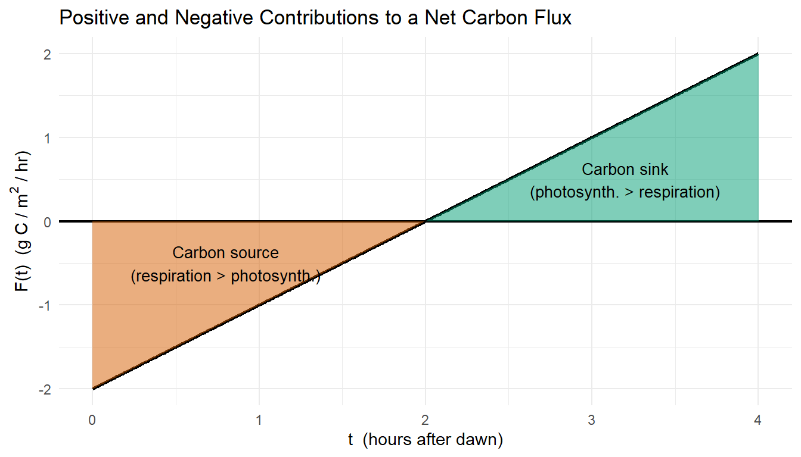
3.11.4 Interpretation of the Result
- From \(t = 0\) to \(t = 2\), \(F(t)\) is negative. That triangle has area \(\tfrac{1}{2}(2)(2) = 2\), so the forest lost 2 g C/m².
- From \(t = 2\) to \(t = 4\), \(F(t)\) is positive. Same-sized triangle, so the forest gained 2 g C/m².
- The two cancel exactly: net change is zero.
Net zero doesn’t mean nothing happened. The forest released carbon for two hours and took up the same amount over the next two.
3.11.5 Why Signed Accumulation Matters
Most real systems gain and lose at the same time, or take turns. A lake gains water in storms and loses it to evaporation. A forest fixes carbon by day and respires it at night. A population grows in good seasons and shrinks in bad ones. Because integrals are signed, they give you the net change in all of these.
Concept Check: What “Signed” Accumulation Means
What does it mean for accumulation to be “signed”?
Click to reveal answer
Positive rates add to the total and negative rates subtract from it, so gains and losses combine into one net number. A lake that gains 30 cm of depth during snowmelt and loses 12 cm in the dry weeks has a net signed accumulation of +18 cm.
Concept Check: What Negative Area Means
What does a negative area under a rate curve represent?
Click to reveal answer
A loss over that interval. The rate is negative: water is leaving, biomass is being lost, a pollutant is breaking down. That contribution gets subtracted from the total.
Concept Check: Why Net Zero ≠ Nothing Happened
Why does a net accumulation of zero not mean “nothing happened”?
Click to reveal answer
Gains and losses may have happened and canceled out. A pond that gained 1000 L from inflow and lost 1000 L to evaporation has a net change of zero, but a lot of water moved. If you care about total throughput rather than net change, you need a different quantity: the integral of |rate|, not of the rate.
3.12 Practice Problems: Accumulation and Approximation
Calculate first, then think about what the number means. Every answer here is a physical quantity. Ask what it represents, and what you had to assume to get it.
Problem 1: Total Streamflow from Constant Measurements
A stream has a constant discharge of
\[
Q = 8 \;\text{m}^3/\text{hr}
\]
for a period of 6 hours.
Calculate the total volume of water that flows past the station during this time.
Reflection prompts:
- What does this total volume physically represent in the stream?
- Under what real environmental conditions might assuming a constant discharge be reasonable?
- How would this calculation change if discharge varied over time?
Click to reveal solution
Because the rate is constant, total volume is: \[ 8 \times 6 = 48 \;\text{m}^3. \]
Reflection responses:
- This volume represents the total amount of water that physically passed the monitoring point during the 6-hour window.
- Assuming constant discharge is reasonable during dry weather, regulated releases, or over short time spans without storms.
- If discharge varied, the calculation would require summing many smaller contributions or using an integral instead of simple multiplication.
Problem 2: Piecewise Streamflow Accumulation
Streamflow during a storm is measured hourly:
| Hour | Flow (m³/hr) |
|---|---|
| 1 | 4 |
| 2 | 9 |
| 3 | 6 |
Calculate the total volume of water that passed the station during the storm.
Reflection prompts:
- Why is it reasonable to treat flow as constant within each hour?
- What environmental processes might cause the flow to increase and then decrease?
- How does this calculation resemble a Riemann sum?
Click to reveal solution
\[ 4(1) + 9(1) + 6(1) = 19 \;\text{m}^3. \]
Reflection responses:
- Hourly measurements assume that changes within each hour are small compared to the hour itself.
- Rainfall intensity, soil saturation, and watershed response can cause flow to rise and then fall.
- Each hour acts as a rectangle, making this a basic Riemann sum approximation.
Problem 3: Left Riemann Sum from Data
Pollutant loading rate (kg/hr):
| Time (hr) | Rate (kg/hr) |
|---|---|
| 0 | 2 |
| 1 | 5 |
| 2 | 9 |
| 3 | 14 |
Use a left Riemann sum with \(\Delta t = 1\) hr.
Reflection prompts: - What assumption does a left Riemann sum make? - Why might this underestimate pollutant load? - When is underestimation problematic?
Click to reveal solution
\[ (2 + 5 + 9)(1) = 16 \;\text{kg}. \]
Reflection responses:
- It assumes the rate at the start of each hour applies throughout that hour.
- Since the rate is increasing within each interval, early values are smaller than later values.
- Underestimation is problematic when setting safety thresholds or regulatory limits.
Problem 4: Right Riemann Sum
Compute a right Riemann sum for the same data.
Reflection prompts:
- How does this change the assumption?
- Why does it overestimate?
- When is overestimation conservative?
Click to reveal solution
\[ (5 + 9 + 14)(1) = 28 \;\text{kg}. \]
Reflection responses:
- It assumes the rate at the end of each hour applies throughout the hour.
- Later values are larger, so the method overshoots the true accumulation.
- Overestimation is conservative when protecting ecosystems or human safety.
Problem 5: Midpoint Riemann Sum
Using the same pollutant loading data as in Problems 3 and 4:
| Time (hr) | Rate (kg/hr) |
|---|---|
| 0 | 2 |
| 1 | 5 |
| 2 | 9 |
| 3 | 14 |
(a) Identify the midpoints of each time interval from \(t=0\) to \(t=3\).
(b) Estimate the loading rate at each midpoint, assuming the rate changes in a straight line between measurements. Fill in the table below.
(c) Use a midpoint Riemann sum with \(\Delta t = 1\) hr to approximate the total pollutant load.
| Interval | Midpoint (hr) | Estimated rate (kg/hr) |
|---|---|---|
| 0–1 | ||
| 1–2 | ||
| 2–3 |
Reflection prompts:
- Why do midpoint values often better represent average behavior over an interval?
- Why should the midpoint estimate fall between the left and right sums?
- When might midpoint assumptions break down in environmental datasets?
Click to reveal solution
(a) Midpoints
Each interval has width \(\Delta t = 1\) hr:
- Interval \(0\text{–}1:\; t = 0.5\)
- Interval \(1\text{–}2:\; t = 1.5\)
- Interval \(2\text{–}3:\; t = 2.5\)
(b) Estimated midpoint rates
Each midpoint rate is halfway between the two measurements on either side:
- \(f(0.5) \approx 3.5\ \text{kg/hr}\)
- \(f(1.5) \approx 7\ \text{kg/hr}\)
- \(f(2.5) \approx 11.5\ \text{kg/hr}\)
(c) Midpoint Riemann sum
\[ (3.5 + 7 + 11.5)(1) = 22\ \text{kg}. \]
Reflection responses:
- Midpoints often capture the average rate when the process changes smoothly over time.
- For an increasing rate, left sums underestimate and right sums overestimate, so midpoint values naturally fall between them.
- Midpoint assumptions can fail when rates change abruptly, such as during flash floods or sudden pollutant releases.
Problem 6: Signed Accumulation
\[ f(t) = t - 2, \quad 0 \le t \le 4 \]
Reflection prompts:
Treat \(f(t)\) as the forest carbon flux from the signed-accumulation example: g C/m²/hr, \(t\) in hours after dawn. Find the net accumulation over \([0, 4]\).
- What does a negative rate mean?
- Does zero net accumulation mean nothing happened?
- Where else do gains and losses cancel over a cycle?
Click to reveal solution
The graph is two triangles of equal area, one below the axis (\(-2\)) and one above (\(+2\)): \[ \int_0^4 (t - 2)\,dt = -2 + 2 = 0. \]
Reflection responses:
- A negative rate means the forest is releasing carbon.
- No. The forest released 2 g C/m² and then took up 2 g C/m².
- Over a full day, daytime uptake and nighttime respiration can come close to canceling. Tides and seasonal cycles do the same thing.
Problem 7: Trapezoidal Rule
Using the rain-barrel flow rate from the worked examples, \[ Q(t) = t^2 \quad \text{L/min on } [1,7] \text{ min}, \; n=3, \] apply the trapezoidal rule to estimate the total volume.
Reflection prompts:
- What assumption does the trapezoidal rule make about the flow rate inside each subinterval?
- Why is it often a better estimate than a basic rectangle method?
- When might assuming linear change within an interval be unrealistic for environmental data?
Click to reveal solution
\[ \Delta t = 2,\quad \text{Volume} \approx 118 \text{ L}. \]
Reflection responses:
- It assumes the rate changes in a straight line within each interval, so the top of each slice is a sloped line and the slice is a trapezoid.
- Many environmental rates change smoothly, so a sloped top follows them better than a flat one.
- Sudden events like flash floods, threshold collapses or pulse releases break the straight-line assumption. You need narrower slices or a different approach.
Problem 8: Comparing Methods
For the same rain-barrel flow, \[ Q(t) = t^2 \quad \text{L/min on } [1,7] \text{ min}, \; n = 3, \] the four approximations are:
- Left Riemann sum: \(70\) L
- Right Riemann sum: \(166\) L
- Midpoint Riemann sum: \(112\) L
- Trapezoidal rule: \(118\) L
The exact volume is \[ \int_1^7 t^2\,dt = 114 \text{ L}. \]
Reflection prompts:
- Why is the midpoint rule so accurate, despite using only 3 rectangles?
- Is “most accurate” always the best criterion when picking a method?
- In what environmental scenarios would deliberate conservativeness (e.g., picking the over- or under-estimating method on purpose) matter more than raw accuracy?
Click to reveal solution
- In each subinterval, the midpoint rectangle is a little low on one side and a little high on the other, and the two errors mostly cancel.
- No. Accuracy is one criterion. Defensibility, conservativeness, how well it copes with noisy data, and cost all matter too.
- A regulator estimating pollutant load may deliberately use the over-estimating method (right Riemann sum, for an increasing rate) to make sure mitigation is sized adequately. A fisheries manager estimating sustainable catch may deliberately use the under-estimating method to leave a safety margin for the population.
Problem 9: Effect of Increasing the Number of Rectangles
Consider the function \[ f(x) = \frac{1}{x} \] on the interval \([1,7]\).
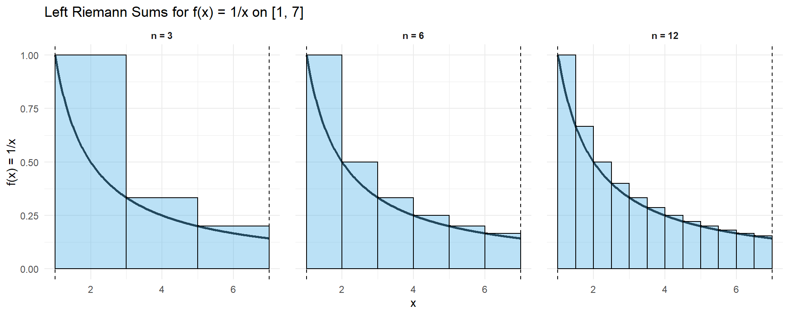
You will use left Riemann sums to approximate the total accumulation for different numbers of subintervals.
(a) Compute a left Riemann sum with \(n = 3\).
(b) Compute a left Riemann sum with \(n = 6\).
(c) Compute a left Riemann sum with \(n = 12\).
(d) Compare your results and describe how the approximation changes as \(n\) increases.
Reflection prompts:
- How does increasing \(n\) change the width \(\Delta x\) of each rectangle?
- Why does a left Riemann sum behave differently for decreasing functions?
- What does increasing \(n\) represent in terms of environmental data collection?
- Why might overestimation be conservative in some environmental contexts?
Click to reveal solution
We use left endpoints throughout.
The exact value for comparison is: \[ \int_1^7 \frac{1}{x}\,dx = \ln(7) \approx 1.946. \]
(a) \(n = 3\)
\[ \Delta x = \frac{7 - 1}{3} = 2 \]
Left endpoints: \(x = 1, 3, 5\)
\[ \text{Sum} = 2\left(\frac{1}{1} + \frac{1}{3} + \frac{1}{5}\right) = 2(1 + 0.3333 + 0.2) \approx 3.07 \]
(b) \(n = 6\)
\[ \Delta x = \frac{7 - 1}{6} = 1 \]
Left endpoints: \(x = 1, 2, 3, 4, 5, 6\)
\[ \text{Sum} = 1\left(1 + \frac{1}{2} + \frac{1}{3} + \frac{1}{4} + \frac{1}{5} + \frac{1}{6}\right) \approx 2.45 \]
(c) \(n = 12\)
\[ \Delta x = \frac{7 - 1}{12} = 0.5 \]
Left endpoints: \[ x = 1,\;1.5,\;2,\;2.5,\;3,\;3.5,\;4,\;4.5,\;5,\;5.5,\;6,\;6.5 \]
\[ \text{Sum} = 0.5\left( 1 + 0.6667 + 0.5 + 0.4 + 0.3333 + 0.2857 + 0.25 + 0.2222 + 0.2 + 0.1818 + 0.1667 + 0.1538 \right) \approx 2.18 \]
(d) Comparison
| \(n\) | Left Riemann Sum |
|---|---|
| 3 | \(3.07\) |
| 6 | \(2.45\) |
| 12 | \(2.18\) |
| Exact | \(\ln(7) \approx 1.95\) |
Because \(f(x) = 1/x\) is decreasing, the left Riemann sum overestimates the true value. As \(n\) increases and \(\Delta x\) decreases, the approximation improves and approaches the exact value from above.
Reflection responses
- Increasing \(n\) decreases \(\Delta x\), making rectangles narrower.
- For decreasing functions, left endpoints use values larger than most of the interval, causing overestimation.
- Increasing \(n\) corresponds to taking measurements more frequently in time or space.
- Overestimation may be conservative when estimating risks such as pollutant loads, water demand, or exposure thresholds.
Problem 10: Signed Accumulation Using Riemann Sums
A simplified model of a cyclic process has rate
\[ f(t) = \sin(t), \]
where \(t\) is time in hours and \(f(t)\) is in kg/hr. One full cycle runs from \(t = 0\) to \(t = 2\pi\), about 6.3 hours.
You will approximate accumulation using midpoint Riemann sums.
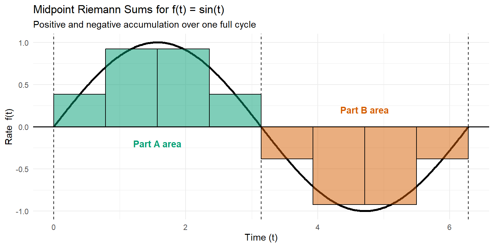
Part A: Accumulation from \(t = 0\) to \(t = \pi\)
Reflection prompts
- Over which interval is the accumulation positive? Over which is it negative?
- Why do the magnitudes of the two accumulations look similar?
- What does the combined result suggest about net change over a full cycle?
- What real environmental systems show this kind of oscillatory behavior?
Click to reveal solution
Part A Solution: \(0 \le t \le \pi\)
(a1) Width of each subinterval
\[ \Delta t = \frac{\pi - 0}{4} = \frac{\pi}{4} \]
(a2) Midpoints
The subintervals are: \[ [0,\tfrac{\pi}{4}],\; [\tfrac{\pi}{4},\tfrac{\pi}{2}],\; [\tfrac{\pi}{2},\tfrac{3\pi}{4}],\; [\tfrac{3\pi}{4},\pi] \]
Midpoints: \[ \frac{\pi}{8},\; \frac{3\pi}{8},\; \frac{5\pi}{8},\; \frac{7\pi}{8} \]
(a3) Evaluate the rate
\[ \sin\!\left(\tfrac{\pi}{8}\right) \approx 0.383 \] \[ \sin\!\left(\tfrac{3\pi}{8}\right) \approx 0.924 \] \[ \sin\!\left(\tfrac{5\pi}{8}\right) \approx 0.924 \] \[ \sin\!\left(\tfrac{7\pi}{8}\right) \approx 0.383 \]
(a4) Midpoint Riemann sum
\[ \left(0.383 + 0.924 + 0.924 + 0.383\right)\frac{\pi}{4} \approx 2.614 \cdot \frac{\pi}{4} \approx \boxed{2.05\ \text{kg}} \]
Part B Solution: \(\pi \le t \le 2\pi\)
(b1) Width of each subinterval
\[ \Delta t = \frac{2\pi - \pi}{4} = \frac{\pi}{4} \]
(b2) Midpoints
\[ \frac{9\pi}{8},\; \frac{11\pi}{8},\; \frac{13\pi}{8},\; \frac{15\pi}{8} \]
(b3) Evaluate the rate
\[ \sin\!\left(\tfrac{9\pi}{8}\right) \approx -0.383 \] \[ \sin\!\left(\tfrac{11\pi}{8}\right) \approx -0.924 \] \[ \sin\!\left(\tfrac{13\pi}{8}\right) \approx -0.924 \] \[ \sin\!\left(\tfrac{15\pi}{8}\right) \approx -0.383 \]
(b4) Midpoint Riemann sum
\[ (-2.614)\frac{\pi}{4} \approx \boxed{-2.05\ \text{kg}} \]
Part C Solution: Full Cycle
\[ 2.05 + (-2.05) = \boxed{0} \]
Interpretation
- Positive accumulation from \(0\) to \(\pi\): net uptake.
- Negative accumulation from \(\pi\) to \(2\pi\): net release.
- Over a full cycle, gains and losses cancel.
Daily carbon exchange, tides and seasonal growth all follow this pattern, just on different time scales. The net number on its own hides a lot of what went on.